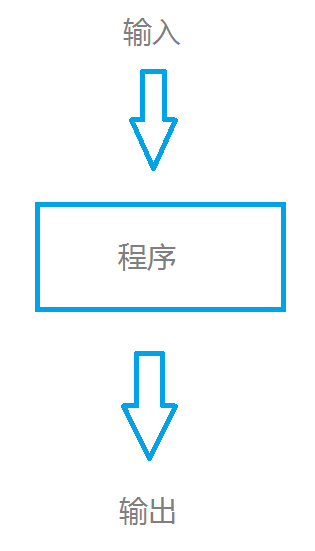

Enjoy Chan(平台前端)
js面向对象编程
类: extend
function Animal(name) {
this.name = name;//属性
}
function Dog(name, color) {
Animal.call(this, name);//call
this.color = color;
}
Dog.prototype = {//方法
getColor: function() {
return this.color;
},
getName: function() {
return this.name
}
}
dog = new Dog();//new instanceof Dog, not instance of Animal
原型链：inherit
function Animal() {
}
Animal.prototype.getName = function() {
return this.name;
}
function Dog(name, color) {
this.name = name;
this.color = color;
}
Dog.prototype = new Animal();
Dog.prototype.constructor = Dog;
dog = new Dog();
增添需求： 动物叫声？
重写对象的属性和方法
Animal.prototype.bark = function() {
}
Dog.prototype.bark = function() {
}
//jquery
$.fn.bark = function() {
}
//underscore.js lodash.js
var data = [{name: 'enjoy chan', age: 17}, {name: 'coco cao', age: 17}];
_.filter(_.pluck(data, 'name'), function(name) {
return name == 'enjoy chan';
})
//lazy.js
data.pluck('name')
.filter(function(){})
heart: mathematical logic
Lambda calculus (also written as λ-calculus) is a formal system in mathematical logic for expressing computation based on function abstraction and application using variable binding and substitution
programs: transformations of data
const x = 10;
func1 = (a) => a + x;//not pure function
func2 = (a) => a + 10;//pure function
纯函数：仅仅依赖于函数的输入，并且当输入相同时输出保持一致。
side-effect free: 无副作用
var data = {},
arr = [1, 2, 3];
for(var i = 0; i < arr.length; i++) {
data[arr[i]] = arr[i]
}
//es5
arr.forEach(function(item) {
data[item] = item;
})
//lodash || underscore
_.each(arr, function() {
data[item] = item;
})
Advantages
unix pipe `|`
获取对象的id值
//数据流从左到右
data | getID('result_rows') | getID('id')
Lambda运算：compose
functional pipelines
//数据流从右到左
compose(getID('id'), getID('result_rows'));
//@fns: array, [fn, fn,...]
const pipe = (fns) => (x) => fns.reduce((v, fn) => fn(v), x);
pipe([getID('result_rows'), getID('id')]);
假设现在有个需求
const welcome = (name) => `welcome ${name}`;
const mr = (name) => `Mr ${name}`;
welcome(mr(name));
//compose
compose(welcome, mr);
//pipe
pipe([mr, welcome]);
js 函数调用
const add = (x, y) => x + y;
add(1, 2); //= 3
add(1); //= NaN
add(1, 2, 3);//= 3
const curry = require('curry');
const add = curry((x, y) => x + y);
const add100 = add(100);
add100(1); //= 101
add(1, 2);//= 3
add(1)(2);//=3
add(1, 2, 3);//=3
可配置，提高代码复用率
//返回数据的id
const data = [{id: 1, sku: '1'},{id: 2, sku: '2'}, {id: 3, sku: '3'}];
data.map((item) => item.id);//= [1, 2, 3]
//返回数据的id
const getID = Curry((property, object) => object[property]);
data.map(getID('id'));//= [1, 2, 3]
ajax请求获取id
//result_rows = {products: [{id: 1}, {id: 2}]};
$.ajax({
url: '/server.json',
})
.then(function(result){
return result.result_rows;
})
.then(function(data) {
var ids = data.products.map(function(product){//= [1, 2]
return product.id;
});
})
//result_rows = {products: [{id: 1}, {id: 2}]};
$.ajax({
url: '/server.json',
})
.then(getID('result_rows'))
.then(getID('id'))
一种设计模式：程序控制流
list = [-1,0,1];
list.map(inc); //= [0,1,2]
list.map(isZero); //= [ture, false, true]
[x*2 | x<-[1..10], odd x]
var x = [1, 2, 3,4,5,6,7,8,9,10];
var result = x.filter(function(item){
return item % 2 != 0;
}).map(function(item) {
return item * 2;
})
const fetchAPI = () => {
let req = SendRequest(url);
let rsp = req.GetResponse();
}
bind: =>
//return value
const square = (x) => square(x);
//return func
const func = (fn) => (x) => fn(x);
no ｀this｀
one argumnet, return value or function
//ex: 1
{} == {} //= false
[] == [] //= false
//ex: 2
var a = {};
var b = a;
b == a //= true
b.f = 'f';
b == a //= true b:{f: 'f'} a:{f: 'f'}
深对比
{list_item}
{list_item}
reactJs: props and stats
facebook immutable.jsMy secret is to share. --author of VueJs
thanks for your attention～👀